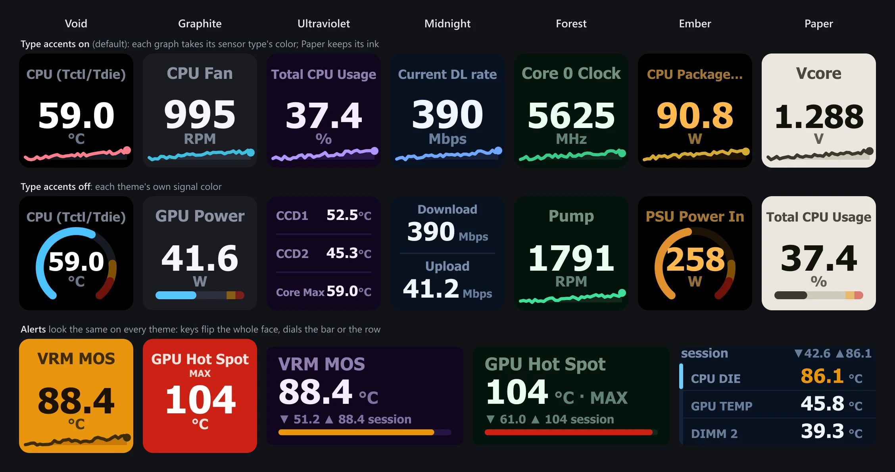
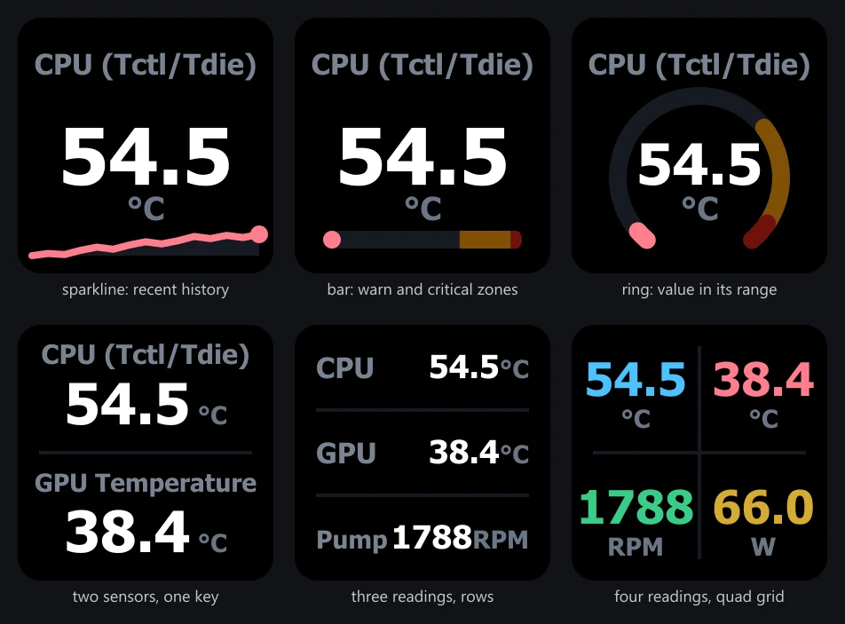
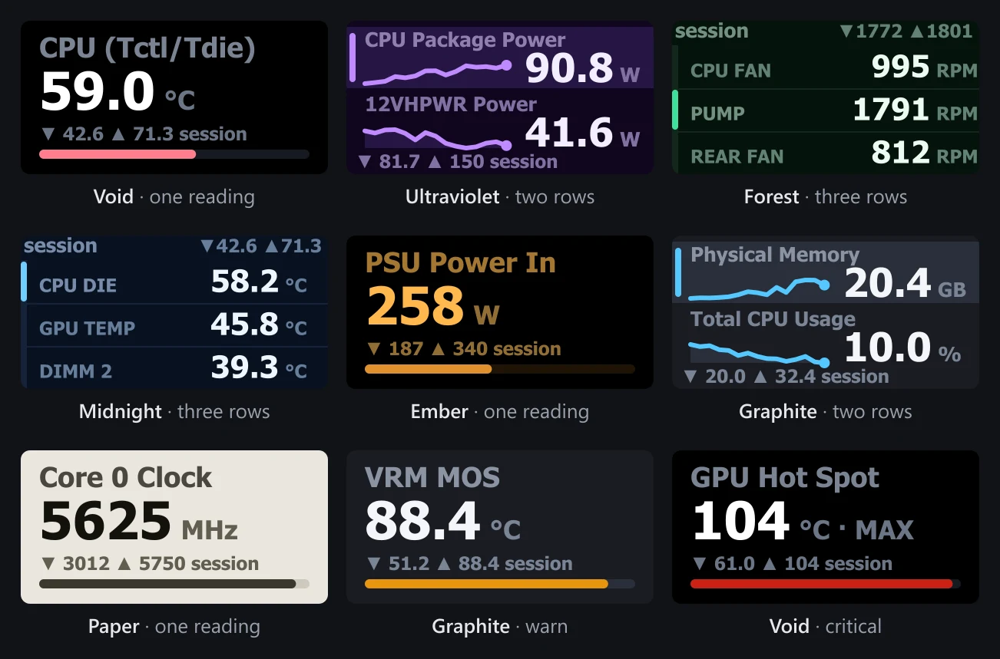
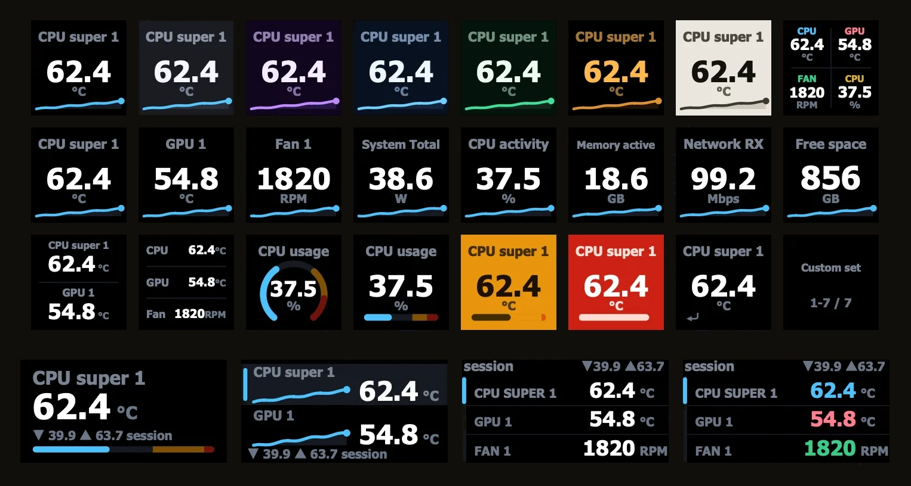
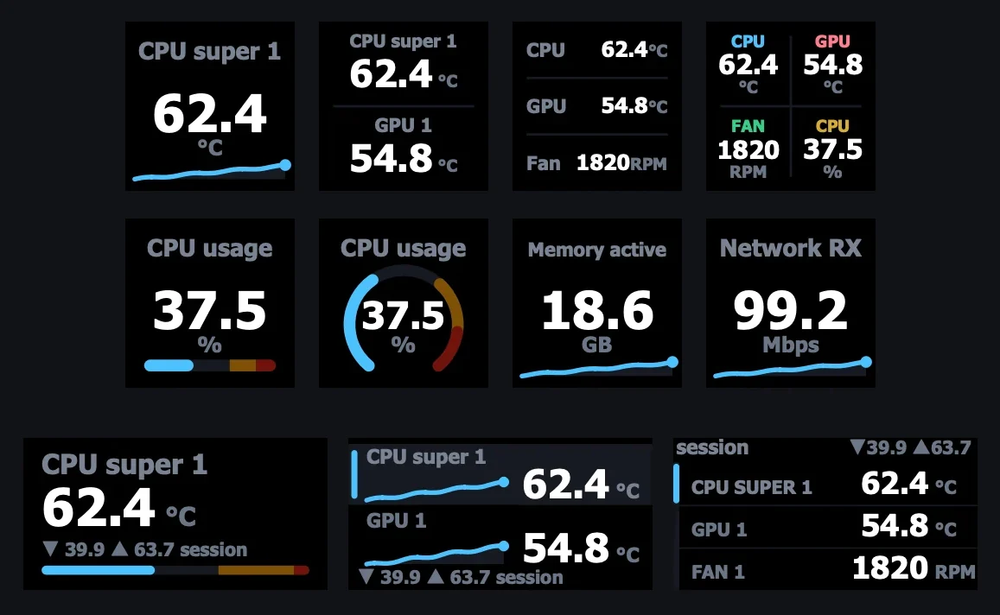

Precision instruments for the machine on your desk.
Tools that read your machine locally and respect it. Bring available hardware readings to your Stream Deck keys and dials with a plugin built for your platform. No ads, no telemetry, MIT licensed.

Readings for the machine you use
Choose the Windows or Mac plugin. Each reads local sources and keeps your hardware in your hands.
HWiNFO Sensors
Put CPU and GPU temperature, clock speeds, fan RPM, usage and power on your keys and dials.
- KeysStream Deck models with keys. One reading per key with a live sparkline, bar or ring gauge, or two, three or four readings on one key. A press can open a detail page.
- DialsStream Deck + and Stream Deck + XL: rotate, push and touch, rotation sets with named groups, and an HWiNFO Control key that drives dials from anywhere. Hardware compatibility
- DisplaySeven themes, including a light theme. Amber warn and red critical alerts keep the same palette on every theme.
- StatusWhen HWiNFO stops publishing, keys say so with a screen that names the problem and its fix. The Gadget source cannot prove HWiNFO is still updating, so steady Gadget values show Age unknown.
- PrivacyNo ads, no telemetry, and no network requests at all: this plugin's only connection is the local one to the Stream Deck app.




- Install the plugin from the Elgato Marketplace, or double-click the .streamDeckPlugin from GitHub Releases.
- Run HWiNFO (free or Pro) and tick Shared Memory Support in its Settings. If a key shows Access denied, the troubleshooting guide lists what to check.
- Drag Sensor Reading onto a key and pick a sensor from the searchable list. The key goes live immediately.
Free HWiNFO switches Shared Memory off after 12 hours. With Gadget reporting enabled, Auto can fall back to Gadget, then switch back when Shared Memory returns. Saved readings need explicit links to work across sources. HWiNFO is a separate free program by REALiX; this plugin does not bundle it.
Mac Sensors
Put your Mac's temperatures, fan speeds, power, CPU activity, memory, storage and network on your keys and dials.
- KeysAny Stream Deck. One reading per key with a live sparkline, bar or ring gauge, or two, three or four readings on a single key. A press cycles MIN, MAX and AVG.
- DialsStream Deck + and Stream Deck + XL: one reading, two rows or three rows, reading sets with named groups, and a Sensor Control key that steers dials from anywhere. Hardware compatibility
- DetailsA key press opens a page of related readings and returns with a Back tile.
- DisplaySeven themes, including Paper, a light theme. Amber warn and red critical alerts look the same on every theme.
- Read-onlyNo fan control, no administrator password, no helper app. No ads, no telemetry and no network requests: its only connection is the local one to the Stream Deck app.


- Install the plugin from the Elgato Marketplace, or double-click the .streamDeckPlugin from GitHub Releases.
- Check for Tahoma Bold. It ships with macOS; if a key says Tahoma needed, turn it on in Font Book.
- Drag Sensor Reading onto a key and pick a reading from this Mac's list.
Which readings appear depends on the Mac and its macOS version. Measured on an Apple silicon M5 Pro; the Intel reader has run on hosted test machines, not yet on a physical Intel Mac.
Principles
The same four rules apply to everything on this site, and everything that comes next.
No ads. Ever.
Nothing on screen you did not ask for. No upsells, no nags, no dark patterns.
No telemetry.
Nothing about you or your machine is ever sent to me. When a tool does need the network, it talks only to the server you pointed it at.
Open source.
Every line is on GitHub. Read it, audit it, or build it yourself from source.
Lean and efficient.
Polling stops when no reading key or dial is on screen. Each measurement, with its method, is in PERF.md.
Built by one person, on purpose.
I am slawrensen, an independent developer. I build small tools for people who care how their machines run.
Every product here is made to be fast, quiet, and trustworthy. If it reads your hardware, it does so locally and tells you exactly what it does.
The work is open source, so you never have to take my word for any of it. The code is the documentation of intent.
HWiNFO Sensors is a ground-up TypeScript rewrite on Elgato's official SDK, inspired by the original Go-based plugin by @shayne: no code shared, credits in NOTICE.md.
Questions, bugs, or ideas go through GitHub Issues for Mac Sensors or HWiNFO Sensors, where they are answered in the open.